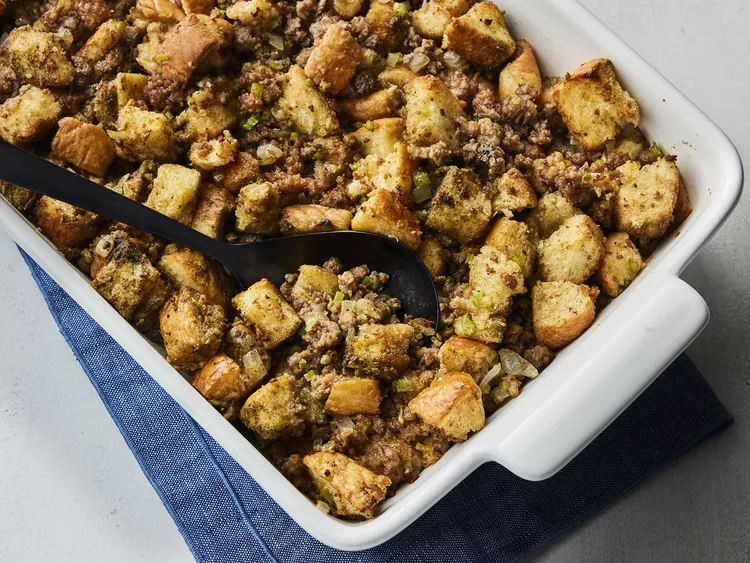

Sausage Stuffing
Home

Description
This classic sausage stuffing, packed with bold flavor and made with simple ingredients, will quickly become a holiday tradition.
Ingredients
- Sausage: This recipe starts with a pound of breakfast sausage.
- Butter: Cook the vegetables in a mix of butter and sausage drippings.
- Vegetables: You’ll need finely diced celery and a chopped onion.
- Bread: The white bread cubes should ideally be slightly stale. If your bread seems too soft, lightly toast it in the oven.
- Seasonings: Season the sausage stuffing with poultry seasoning and ground black pepper.
Steps
- Cook the sausage and use a slotted spoon to transfer it to a bowl.
- Pour the drippings into a measuring cup with melted butter.
- Cook the vegetables in the dripping-butter mixture.
- Stir in ⅓ of the bread cubes, then transfer the vegetable mixture to the sausage bowl.
- Add the remaining ingredients and mix well.
- Preheat the oven to 350 degrees F (175 degrees C) and butter an appropriately sized dish.
- Place stuffing mixture in the prepared dish and cover.
- Place the dish in a pan of hot water and bake in the preheated oven until golden brown and crisp on top, basting occasionally with turkey drippings.